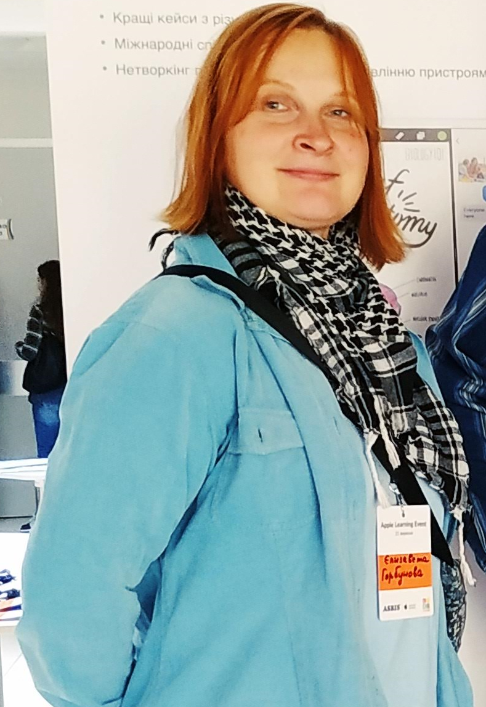
Yelyzaveta Horbunova / Єлизавета Горбунова
Yelyzaveta Horbunova / Єлизавета Горбунова
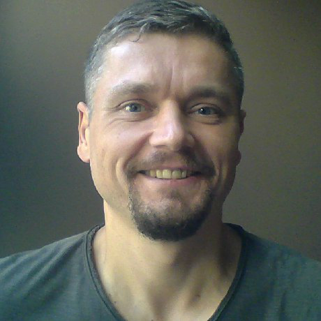
Andrew Zhukov / Андрій Жуков
Andrew Zhukov / Андрій Жуков
Роль в команді: Lead Coach/Mentor 2,
Батько одного із учасників команди (Нікіти Жукова).
Програмування Java, JavaScript, функціональне. Додатки для Web, Android.
Пройшов тренінг з підготовки менторів-вчителів для координації команд у турнірі FIRST Tech Challenge, який був організований міською ініціативою Kyiv Smart City спільно з навчальним STEM-центром «Сократ» та технічним партнером компанією 2D3Dдля.
Захоплення: математика, музика, спорт.
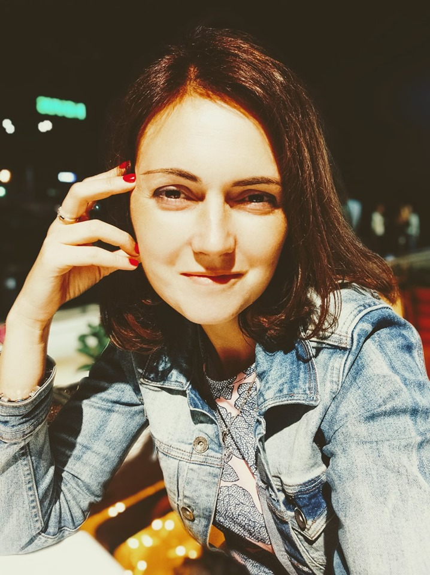
Viktoriia Olomutska / Вікторія Оломуцька
Viktoriia Olomutska / Вікторія Оломуцька
Роль в команді: Mentor.
Займається зовнішніми комунікаціями команди.
Адмін FB сторінки та групи Team 16823 - WinXspace.
Мати одного із учасників команди (Даміра Мірталібова).
Представник ініціативи KyivSmartCity.
Брала участь у робототехнічних змаганнях Best Robo Fest 2019 та MakeX UA як другий ментор команди.
Пройшла тренінг з підготовки менторів-вчителів для координації команд у турнірі FIRST Tech Challenge, який був організований міською ініціативою Kyiv Smart City спільно з навчальним STEM-центром «Сократ» та технічним партнером компанією 2D3Dдля.
Полюбляє вело прогулки містом та мандрівки Європою.
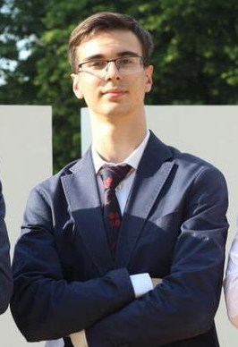
Name / Ім'я
Name / Ім'я
Роль в команді: Youth mentor
Захоплюється (……………….).
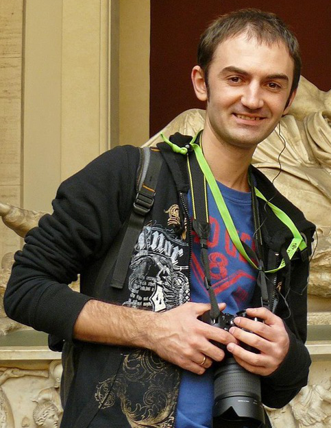
Vitaliy Ilchenko/ Віталій Ільченко
Vitaliy Ilchenko/ Віталій Ільченко
Роль в команді: Батько одного із учасників команди (Матвія Ільченко), наглядач з графічного дизайну.
Професійно займається графічним дизайном (поліграфія)
Приймав активну участь в First Lego League, а саме trash trek(2015), animal allies (2016) та hydro dynamics (2017) як другий ментор команди.
Захоплюється музикою, фотографією, подорожами.
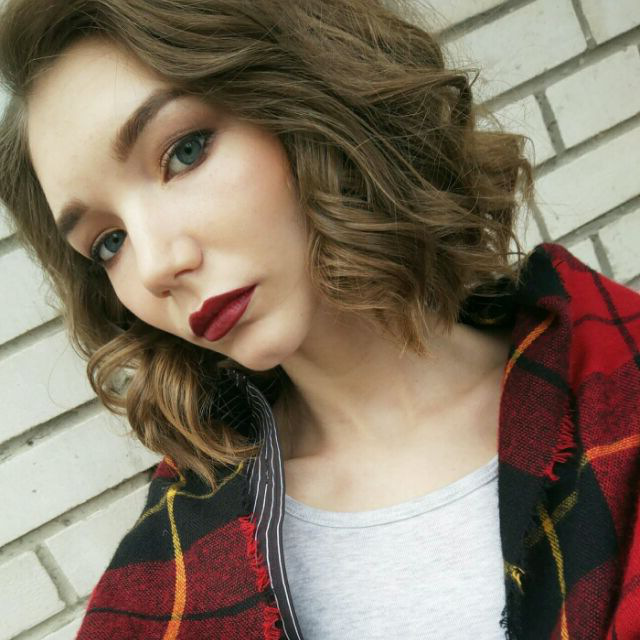
Milana / Мілана
Milana / Мілана
Роль в команді: Дизайнер/Билдер
Учениця Скандинавської гімназії.
Брала участь у робототехнічних змаганнях Best Robo Fest 2019 (Robo Race, Robo Maze, Авторські: Robo Sumo) та MakeX UA.
Захоплюється дизайном.
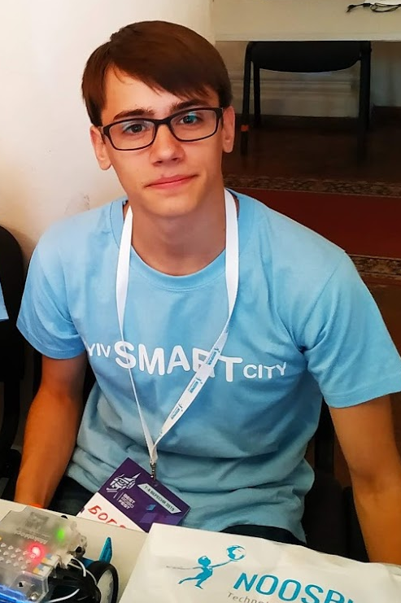
Boghdan / Богдан
Boghdan / Богдан
Роль в команді: Дизайнер/Билдер
Учень Скандинавської гімназії.
Брав участь у робототехнічних змаганнях Best Robo Fest2019 (Robo Race, Robo Maze, Авторські: Robo Sumo) та MakeX UA.
Участник музикальної групи (……).
Захоплюється (……..).
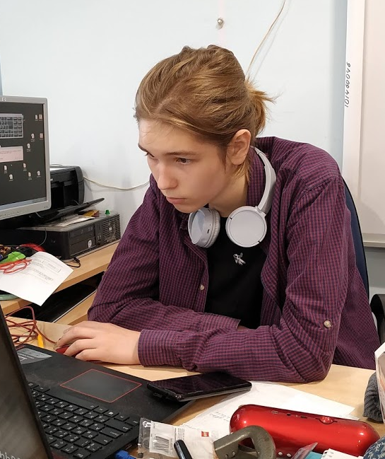
Fedir / Федір
Fedir / Федір
Роль в команді: Режиссура / Видеомотаж.
Учень Скандинавської гімназії.
Брав участь у робототехнічних змаганнях Best Robo Fest2019 (Robo Race, Robo Maze)
Участник музикальної групи (………).
Захоплюється: артхаусное кино, андеграундная музыка.
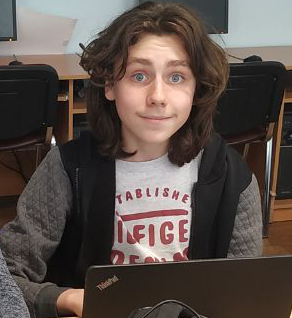
Nikita / Нікіта
Nikita / Нікіта
Роль в команді: Билдер, Программер.
Брав участь у робототехнічних змаганнях Best Robo Fest2019 (Robo Race, Robo Maze)
Участник музикальної групи "Strange Melody", "Brain Explosion".
Захоплюється музыкой, .
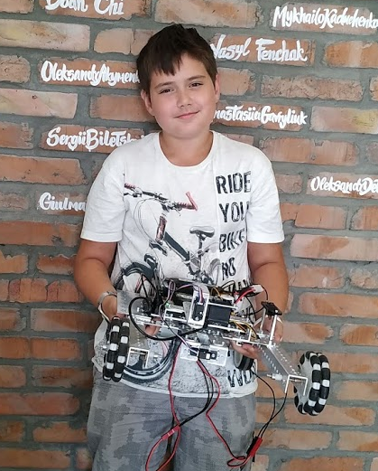
Damir / Дамір
Damir / Дамір
Роль в команді: Билдер, Программер.
Учень спеціалізованої школи №80 Печерського р-ну міста Києва.
Активно приймає участь у різних конкурсах та змаганнях з IT. Наприклад його проект в категорії "Здоровий образ життя" на Всеукраїнському конкурсу «Володарі Scratch» посів 17 з 88 місць.
Дамір зайняв 3 місце у конкурсі #smartпокоління від KyivSmartCity з відеороботою про “чудолавку” на сонячних батареях. Також брав участь у робототехнічних змаганнях Best Robo Fest 2019 (Scratch, Robo Race, Robo Sumo) та MakeX UA.
Полюбляє грати з друзями в футбол, квадрат, ходити до квест кімнат.
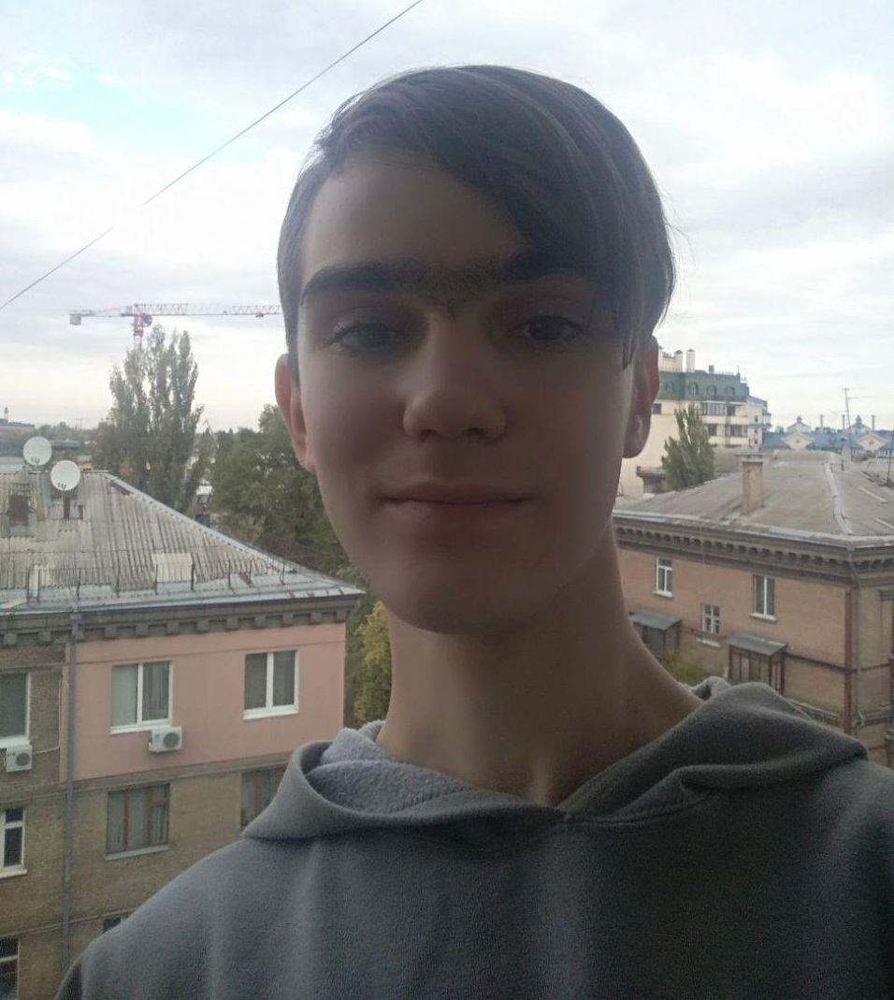
Matvey / Матвій
Matvey / Матвій
Роль в команді: Билдер, Программер
Учень спеціалізованої школа № 17
Подільського р-ну м. Києва з поглибленим вивченням математики
Займався в центрі робототехники "BOTEON", програмування Ардуіно,
“Технічне конструювання (робототехніка)” від КПДЮ.
Декілька разів брав участь в First Lego League, а саме:
2015 - trash trek;
2016 - animal allies (перше місце в номінації "гра роботів");
2017 - hydro dynamics.
Захоплюється вело прогулянками, Web програмуванням, комп'ютерним адмініструванням.
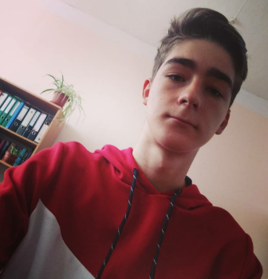
Andrey / Андрій
Andrey / Андрій
Роль в команді: Билдер, Программер
Учень спеціалізованої школа № 80
Печерського-ну м. Києва
Займався курсами по програмуванню Ардуіно, трохи знає HTML.
Майже вступив до школи програмування Samsung.
Зайняв зі змагання з карате 2 місце.
Мета в житті: Стати програмістом по роботам, поїхати / вчитися в США.
Девіз життя: Тільки развиток, не сиджу на місці.
Хобі: Вчить самостійно англійську.
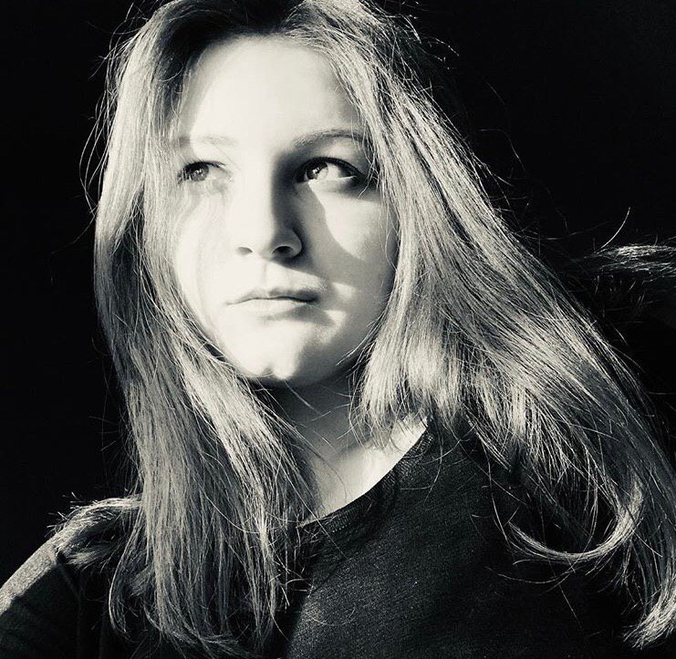
Tanny / Тетяна
Tanny / Тетяна
Роль в команді: піар-менеджер
Учениця Скандинавської гімназії.
Захоплюється танцями (7 стілів), мовами (8 іноземних), псіхологією, медициною, фотографією та точних наук
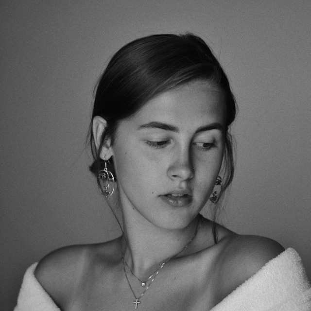
Yeva / Єва
Yeva / Єва
Роль в команді: фотограф та помічник з візуалом команди, адмін сторінки команди в Instagram, учасник команди піару WinXspace.
Учениця Скандинавської гімназії.
Захоплюється: фотографією, кіномистецтвом.
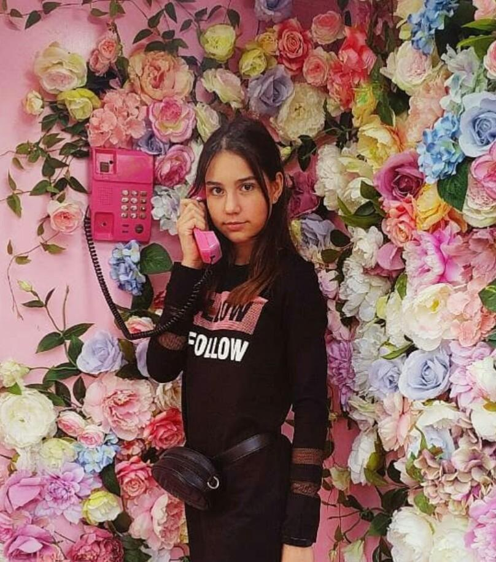
Dana / Дана
Dana / Дана
Учениця Скандинавської гімназії.
Роль в команді: Дизайнер та учасник піару команди WinXspace.
Учасниця та один із засновників танцювальної групи "Space gir1s".
Займається програмуванням і створенням роботів.
Цікавиться малюванням та дизайном речей. Полюбляє робити яскраві та життєві фото в Instagram.
Захоплюється: танцями, фотографією та плаванням.
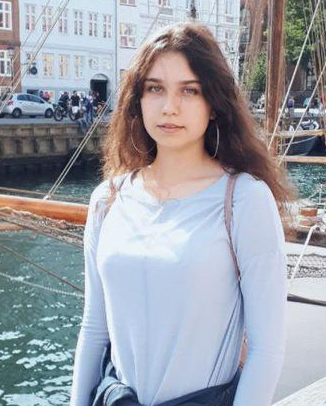
Alina / Аліна
Alina / Аліна
Роль в команді: Провiдний дизайнер.
Учениця Скандинавської гімназії.
Захоплюється: дизайн логотипов, WEB-дизайн, разработка стилей.

Sofia / Софія
Роль в команді: дизайнер та учасник піару команди WinXspace.
Учениця Скандинавської гімназії.
Захоплюється: професійно художньою гімнастикою та має третій дорослий розряд; танцями (театр сучасного танцю); плаванням (багаторазова переможниця міських та районних змагань, з різних стилів плавання: брас, кроль, батерфляй, вільний стиль); моделінгом і створенням дизайнерських речей.
Засновниця танцювальної групи "Space gir1s". Учасниця різноманітних шкільних конкурсів та олімпіад: з фізики, хімії,алгебри, геометрії, української мови та літератури і т.д.
Крім цього веде активний спосіб життя, вивчає різні мови, займається програмуванням і цікавиться розробкою роботів.
Девіз життя: живи так, як подобається і роби те що любиш.
Мета в житті: стати успішною та щасливою)
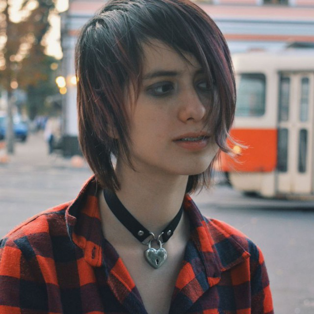
Ryan Riot / Райан Райот
Ryan Riot / Райан Райот
Роль в команді: дизайнер, учасник піару команди WinXspace.
Захоплюється косплеєм, фотографією, малюванням, вчиться грати на гітарі та обожнює емо музику
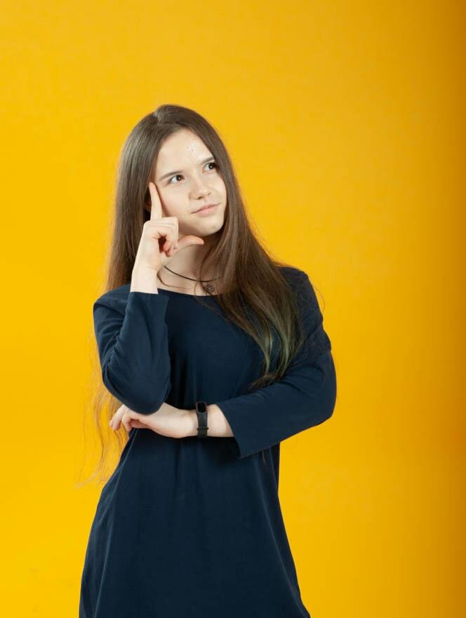
Valeria /Валерія
Valeria /Валерія
Роль в команді:учасниця команди
Учениця Скандинавської гімназії
Займається единоборствами. Приймала участь у місцевих та всеукраїнських змаганнях з Тхеквондо.
Брала та бере участь у всеукраїнській дитячо-юнацькій військово-патріотичній грі “Джура”.
Захоплюється малюванням, трохи 3D моделюванням, популярною та гік-культурою.
Готова підтримувати і в усьому допомагати команді . :)
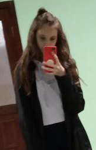
Diana / Діана